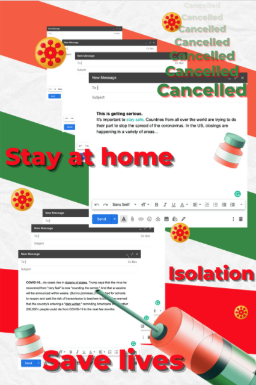

Assigment I: Confounding Tools
A collection of emails received during the two years of the pandemic combined into one poster using Canva. Exploration of non-traditional tools and techniques in the design practice.
Prototypes:


Final: